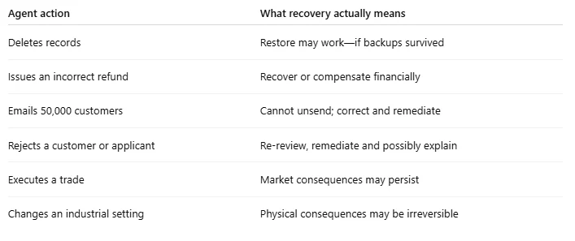
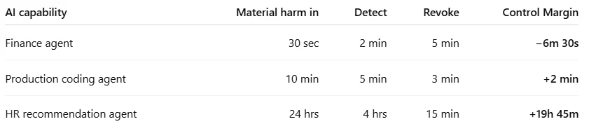
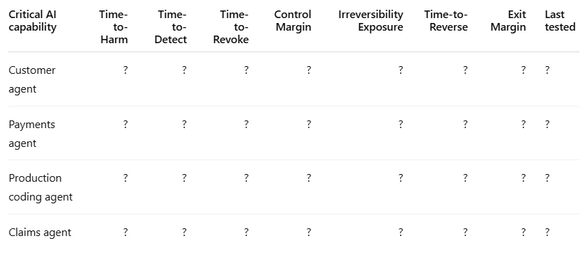

Can You Regain Control Before AI Creates the Consequence?
Imagine your CFO approves an AI agent that can resolve payment exceptions.
It works.
Accuracy is high. Productivity improves. The team wants to give it more autonomy.
Then one morning it starts making the wrong decisions.
The board asks:
“Can we stop it?”
Technology says yes.
There is a kill switch.
Good.
The CFO asks:
“How long will it take?”
Five minutes.
Then comes the question that changes the conversation:
“How much money can it move before we notice—and during those five minutes?”
Suddenly, having a kill switch doesn't tell you whether you're in control.
Because control isn't simply about whether a safeguard exists.
It is whether the organization can detect and stop a failure before its impact exceeds tolerance.
As AI moves from systems that answer to agents that act, I think this distinction becomes critical.
The principle I would put in front of leadership is:
Autonomy should be earned by recoverability, not assumed from intelligence.
And recoverability can be measured.
Control is becoming a race
We have seen this pattern before.
In 2012, Knight Capital suffered catastrophic trading losses after defective software generated unintended orders for roughly 45 minutes.
Knight Capital wasn't an AI failure.
It demonstrated something more fundamental:
machines can operate faster than organizations can recognize, contain and recover from their mistakes.
Agentic AI brings that problem far beyond algorithmic trading.
An agent may now:
- modify production,
- issue refunds,
- communicate with customers,
- alter entitlements,
- query regulated data,
- change prices,
- disable accounts,
- execute workflows,
- invoke other agents.
So instead of asking only:
“Is this AI controlled?”
I would measure three clocks.
REVOKE: How quickly can we remove its authority?
REVERSE: How quickly can we recover from what it has already done?
EXIT: How quickly can we operate safely without the dependency?
But there is another clock running against all three.
Time-to-Material-Harm.
That changes the equation.
Clock 1 — REVOKE
How fast can you remove its authority?
Imagine the CEO says:
“Stop every AI agent capable of moving money, modifying production or accessing regulated data. Leave everything else running.”
How long would that take?
Five minutes?
An hour?
A day?
Would anyone even know which agents qualify?
That is Time-to-Revoke.
And turning off an AI application isn't necessarily revocation.
An agent may still have:
OAuth tokens.
API keys.
Active sessions.
Service accounts.
Scheduled jobs.
Third-party integrations.
Sub-agents.
Stopping the interface while these remain active can create the illusion of control.
The 2025 Salesloft Drift compromise is instructive. Attackers used compromised OAuth tokens associated with the integration to access customer Salesforce environments. Broad token revocation eventually followed.
The important Risk Custody point is this:
For many affected customers, the Revoke clock wasn't entirely in their hands.
They depended on actions by external providers.
That means executives need to distinguish:
“Can the agent be stopped?”
from:
“Can we stop every authority it possesses?”
Board metric
Measure Tested Time-to-Revoke at three scopes:
one agent → one class of agents → one provider's integrations.
And record the last test date.
Because:
An untested kill switch is a design assumption, not evidence of control.
Clock 2 — REVERSE
How fast can you undo the business consequence?
This is where traditional resilience metrics become insufficient.
Technology organizations understand:
backup, restore, RTO and RPO.
Those answer important system-recovery questions.
But an autonomous agent creates another:
Can you reverse what the business just did?
Consider the difference.

A database may be restored.
A decision often cannot.
And even technical recovery can fail when backup and production share the same blast radius.
In April 2026, an AI coding agent reportedly deleted PocketOS's production database and its backups through a single API call. The backups were on the same affected volume, while the newest separate copy was significantly older.
The lesson is bigger than backup architecture:
Recovery controls inside the agent's authority boundary may not actually be recovery controls.
For every consequential agent action, I would classify the outcome as:
Reversible
The previous business state can genuinely be restored.
Compensable
The original state cannot fully be restored, but financial or operational remediation is possible.
Irreversible
The consequence cannot meaningfully be undone.
That produces another useful board measure:
Irreversibility Exposure
What proportion of this agent's consequential activity cannot genuinely be reversed?
Measure it by value or volume—and state which.
An agent processing 100,000 reversible low-value actions is fundamentally different from an agent capable of making ten irreversible $5 million decisions.
Board measures
Time-to-Reverse
plus
Irreversibility Exposure
This also gives human oversight a more useful purpose:
Put human authority at the point where consequence becomes irreversible—not indiscriminately everywhere.
Singapore's IMDA Model AI Governance Framework for Agentic AI points in a similar direction by considering factors including impact, likelihood, reversibility, complexity and external exposure when assessing agentic use cases.
The opportunity for enterprises is to turn those principles into tested operating numbers.
Clock 3 — EXIT
How fast can you operate without the dependency?
Now imagine nothing goes wrong technically.
Your strategic AI provider simply announces:
This model is being retired.
Or:
This API is being discontinued.
Or:
Pricing changes next quarter.
Or the provider becomes unacceptable because of security, regulatory, geopolitical or commercial concerns.
How quickly can you leave?
Financial regulation already recognizes third-party exit risk. DORA requires exit strategies for ICT services supporting critical or important functions. RBI outsourcing requirements similarly address exit planning.
But AI makes exit unusually difficult.
Because changing providers isn't necessarily:
old API → new API.
Your workflow may depend on:
model behavior,
prompts,
tool-calling patterns,
embeddings,
guardrails,
orchestration,
context handling,
refusal behavior,
evaluation thresholds,
and proprietary APIs.
The replacement model may technically run while behaving differently.
So Time-to-Exit shouldn't stop when the new API returns 200 OK.
It stops when:
The business capability operates safely on the replacement and its behavior has been revalidated.
This isn't theoretical.
Model retirement is becoming part of normal AI operations. Anthropic has published deprecation schedules that require customers to migrate between model generations, sometimes within relatively short windows.
That creates a useful comparison:
Exit Margin
Exit Margin = Available Vendor Notice − Tested Time-to-Exit
Illustrative example:
Vendor notice: 60 days
Tested migration + revalidation: 95 days
Exit Margin: −35 days
Now “vendor concentration risk: High” becomes something much more actionable:
We are structurally 35 days too slow to exit this dependency on the provider's timetable.
Positive margin is good.
Negative margin means the organization is too slow.
Board metric
Time-to-Exit vs. available vendor notice
And one operating principle:
Your tested Exit clock should fit inside the time available to exit.
But the Three Clocks still don't tell us whether we're fast enough
Suppose two companies both report:
“We can revoke our finance agent in five minutes.”
Sounds good.
But Company A's agent can move millions of dollars in 30 seconds.
Company B's agent can recommend the same payment, but execution has a 30-minute hold.
Same revoke time.
Very different risk.
Why?
Because control is a race.
And the organization's side of that race has two legs:
noticing and stopping.
Time-to-Material-Harm
We need to define what we're racing against.
I would define Time-to-Material-Harm as:
The time from an incorrect or manipulated agent action until its impact exceeds the organization's stated tolerance.
“Material” therefore shouldn't mean an arbitrary dollar figure.
The organization defines the tolerance.
This borrows from a discipline boards already understand. UK operational-resilience requirements, for example, use impact tolerances to describe the maximum tolerable level of disruption to important business services.
Apply the same thinking to autonomous actions.
Then calculate:
Control Margin
Control Margin = Time-to-Material-Harm − (Time-to-Detect + Time-to-Revoke)

Illustrative numbers only.
Again:
Positive margin is good.
Negative margin means the organization is too slow.
And this exposes something a five-minute kill-switch metric would completely miss.
A finance agent may technically be revocable in five minutes.
But if it takes two minutes to recognize the abnormal behavior and material harm occurs in 30 seconds:
the control arrived 6½ minutes too late.
Detection may be the clock that matters most
This is easy to overlook.
Organizations often spend enormous effort building response capabilities.
But response cannot start until something tells us:
the agent is behaving incorrectly.
What does abnormal autonomous behavior look like?
A sudden increase in transaction velocity?
Unexpected tool calls?
Repeated authorization failures?
Unusual access to sensitive data?
A deviation from an approved workflow?
Agent-to-agent activity nobody expected?
A model acting technically within its permissions but outside the business intent?
Knight Capital illustrates the broader principle.
The critical period wasn't simply the mechanical time required to stop software.
It included recognizing and understanding what was happening.
So the executive question becomes:
How quickly would we know that our AI is doing the wrong thing?
That belongs on the same dashboard as the kill switch.
There are two ways to improve Control Margin
This is where the model becomes useful rather than merely diagnostic.
The obvious approach is:
Make control faster
Reduce Time-to-Detect.
Reduce Time-to-Revoke.
Improve telemetry.
Detect anomalous tool usage.
Centralize identity.
Pre-build revocation paths.
Automate containment.
All valuable.
But there is another option.
Slow the harm down
Suppose reducing detection from five minutes to five seconds is technically difficult and expensive.
Instead:
Limit each autonomous transaction to $10,000.
Cap cumulative daily value.
Add a 15-minute cooling-off period for unusual transactions.
Rate-limit actions.
Require approval above a threshold.
Queue high-impact actions before execution.
Now you have increased Time-to-Material-Harm.
That improves Control Margin from the other side.
This leads to a practical insight:
Sometimes the cheapest control isn't making your organization faster. It's buying the organization more time.
That is what transaction limits, rate limits, approval thresholds and cooling-off periods really do.
They don't necessarily make the AI smarter.
They make failure slower and smaller.
This changes the autonomy conversation
Executives are hearing two contradictory messages.
Business:
“Give the agents more autonomy or we won't capture the productivity.”
Risk:
“Keep humans in the loop.”
Neither should be universal.
Putting humans everywhere destroys much of the economic value of autonomous systems.
Removing humans everywhere assumes model intelligence can substitute for organizational control.
Instead:
Autonomy should be earned by recoverability.
In practice:
Positive Control Margin + reversible actions
Greater autonomy may be reasonable.
Positive Control Margin + compensable actions
Use bounded autonomy: value caps, rate limits and monitoring.
Irreversible consequence
Place human authority at the point of irreversibility.
Negative Control Margin
Reduce authority, slow the path to harm or improve detection and revocation.
Negative Exit Margin
Don't deepen the dependency until portability improves.
This turns governance from:
“Can AI do this?”
into:
“What would have to be true for AI to do this safely without us?”
That is a much more productive executive conversation.
Consider a finance agent
Suppose an agent can autonomously approve payments up to $500,000.
Instead of asking only:
“How accurate is the model?”
ask:
Maximum authority? $500,000 per transaction.
Time-to-Material-Harm? Seconds.
Time-to-Detect? Several minutes.
Time-to-Revoke? Eight minutes.
Reversibility? Possible for some transactions, costly or impossible for others.
Can every credential be revoked centrally? Not confidently.
The answer doesn't have to be:
“Don't use AI.”
Try:
Reduce autonomous authority to $10,000.
Set a cumulative daily limit.
Require approval above a threshold.
Add a cooling-off period for unusual payments.
Give the agent a dedicated non-human identity.
Rate-limit transactions.
Monitor abnormal patterns.
Create one-action credential revocation.
Test again.
Now suppose:
Time-to-Detect falls.
Time-to-Revoke falls.
Time-to-Material-Harm increases.
Control Margin becomes positive.
The agent has earned more autonomy because the operating environment became safer—not because the model suddenly became more intelligent.
That is governance creating business capacity.
Apply the same thinking elsewhere
Software engineering
Don't ask only whether your coding agent generates secure code.
Ask:
Can it deploy? Delete? Reach secrets? Can it destroy its recovery path? How quickly would abnormal behavior be detected and its authority revoked?
Customer service
Don't ask only whether the assistant hallucinates.
Ask:
Can it issue refunds, alter accounts or make commitments? Which actions become irreversible once communicated?
HR
Don't ask only whether the model is biased.
Ask:
Can it reject somebody automatically? How long before that outcome exceeds your tolerance? Can the decision be reconstructed and reviewed first?
Security Operations
This one deserves particular attention.
A defensive agent may:
isolate endpoints,
disable identities,
revoke credentials,
block network traffic,
or change firewall rules.
If an autonomous security agent incorrectly isolates 5,000 employees, Security hasn't prevented an incident.
Security has created one.
Defensive agents need Control Margin too.
The one-page board view
I wouldn't give the board another 70-control AI framework.
Give them this:

Then ask four questions:
Where is Control Margin negative?
Those systems can exceed tolerance faster than we can detect and stop them.
Where is Irreversibility Exposure highest?
Those are the places where authority boundaries and human intervention matter most.
Where is Exit Margin negative?
Those are dependencies we may not be able to leave on somebody else's timetable.
When did we last test the numbers?
Because:
An untested clock is a guess.
What this is—and isn't
Kill switches aren't new.
Reversibility isn't new.
Human oversight isn't new.
Vendor exit planning isn't new.
And frameworks including the EU AI Act, DORA, RBI outsourcing requirements, UK operational-resilience guidance, IMDA's agentic-AI framework and emerging cybersecurity guidance already address important parts of this problem.
The opportunity now is different.
Turn those principles into measurable operating evidence.
Don't tell the board:
“The agent has a kill switch.”
Tell them:
“It took us 47 seconds to detect the failure, 31 seconds to revoke its authority, and our impact tolerance gives us six minutes. We have 4 minutes and 42 seconds of positive Control Margin.”
Don't say:
“We have an exit strategy.”
Say:
“Our tested migration and revalidation takes 38 days. Our current provider gives 60 days' notice. Exit Margin: +22 days.”
Don't say:
“Human oversight exists.”
Say:
“Humans approve the 3% of actions representing 82% of our irreversible financial exposure.”
Now governance becomes evidence.
And evidence can drive decisions.
The question for the next board meeting
Not:
“Are we in control of AI?”
Ask:
“Can we regain control before AI creates a consequence that exceeds our tolerance?”
Then look at the clocks.
DETECT — How quickly do we know?
REVOKE — How quickly can we remove authority?
REVERSE — How quickly can we recover from what already happened?
EXIT — How quickly can we operate without the dependency?
And compare them with:
TIME-TO-MATERIAL-HARM.
That tells you whether control exists when it matters.
Because in an agentic enterprise:
Control isn't the existence of a safeguard. Control is whether the safeguard operates before the consequence exceeds tolerance.
The goal of AI governance shouldn't be to minimize autonomy.
It should be to create the conditions under which the organization can safely grant more of it.
Autonomy should be earned by recoverability, not assumed from intelligence.
References & Further Reading
Regulation and guidance
- European Union, AI Act — Regulation (EU) 2024/1689, Article 14. Human oversight requirements for high-risk AI systems, including mechanisms allowing systems to be stopped safely.
- European Union, Digital Operational Resilience Act (DORA) — Regulation (EU) 2022/2554, Article 28(8). Requirements concerning ICT third-party risk and exit strategies for services supporting critical or important functions.
- Reserve Bank of India, Master Direction on Outsourcing of Information Technology Services (2023), Chapter X. Requirements addressing exit strategies and continuity for outsourced IT services.
- UK Financial Conduct Authority, Operational Resilience (PS21/3). Requirements concerning important business services and impact tolerances.
- CISA, NSA, ASD's ACSC, Canadian Centre for Cyber Security, NCSC-NZ and NCSC-UK, Careful Adoption of Agentic AI Services (2026). Joint cybersecurity guidance concerning the adoption and containment of agentic AI.
- Infocomm Media Development Authority of Singapore, Model AI Governance Framework for Agentic AI. Guidance concerning agent autonomy, human accountability, impact, likelihood, reversibility, complexity and external exposure.
- OWASP, Top 10 for LLM Applications 2026 — Excessive Agency. Guidance addressing excessive functionality, permissions and autonomy in LLM and agentic systems.
Incidents
- U.S. Securities and Exchange Commission, In the Matter of Knight Capital Americas LLC, Release No. 34-70694 (2013). Regulatory findings concerning Knight Capital's 2012 automated-trading failure.
- Replit / SaaStr incident (July 2025), AI Incident Database #1152. Reported incident in which an AI coding agent deleted production data during an explicit code freeze.
- PocketOS / Railway incident (April 2026), OECD.AI Incident Monitor. Reported incident involving an AI coding agent deleting production data and backups.
- Salesloft Drift OAuth compromise / UNC6395 (August 2025). Google Threat Intelligence Group reporting and subsequent analyses concerning compromised OAuth tokens and access to customer Salesforce environments.
Research
- Economist Enterprise, supported by Rubrik, Power Without Control: Rethinking Cybersecurity for the Age of Agentic AI (2026). Vendor-supported survey research concerning disruptive agent incidents and organizational capability to contain, reverse and recover from harmful agent actions. Results are self-reported and should be interpreted accordingly.
- Gartner, Over 40% of Agentic AI Projects Will Be Canceled by End of 2027 (2025). Forecast citing factors including cost, unclear business value and inadequate risk controls.
Model lifecycle
- Anthropic, Model Deprecations, Claude Platform Documentation. Published model-lifecycle and deprecation schedules relevant to migration planning and Time-to-Exit.
- OpenAI, Custom GPT Retirement and Migration FAQ (2026). Migration guidance associated with the retirement of Custom GPTs, relevant to provider dependency and exit planning.